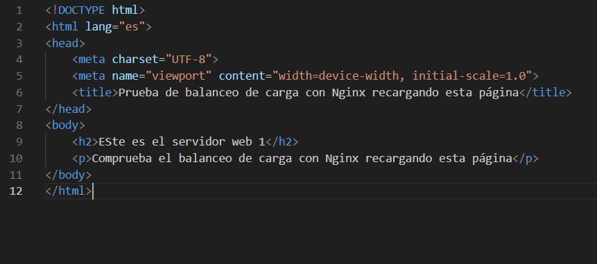
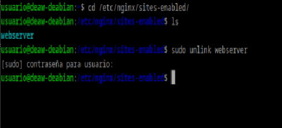
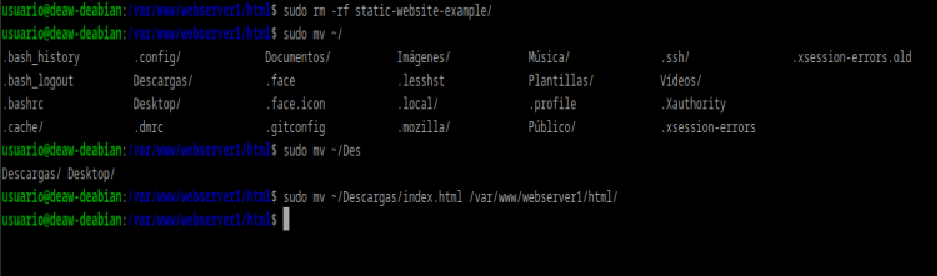
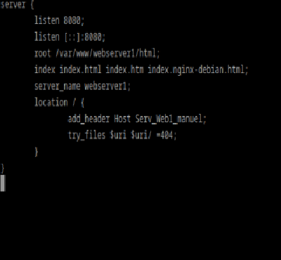
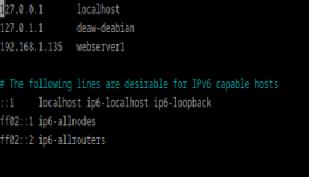
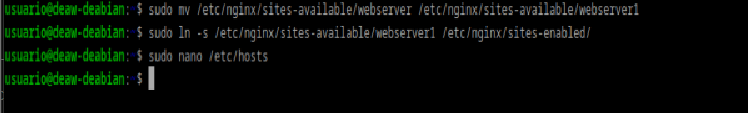
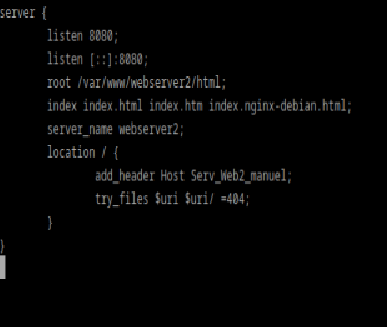
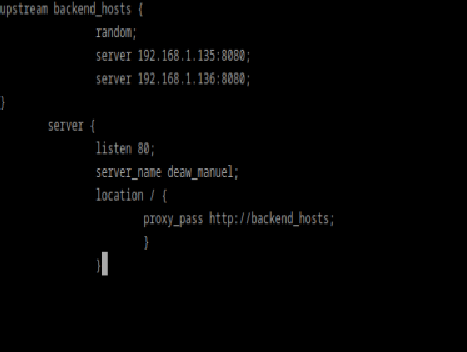
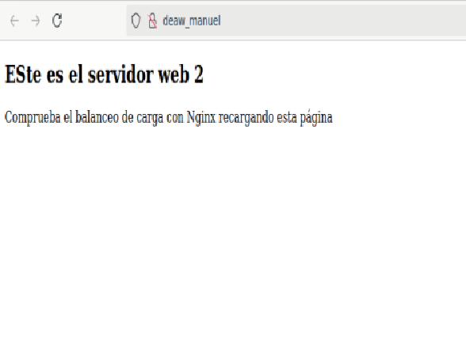
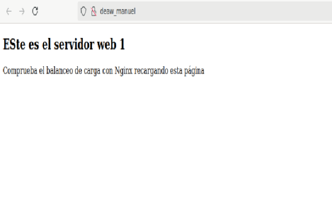

Práctica 2.4: Proxy inverso con balanceo de carga con Nginx
En primer lugar, como siempre, nos aseguramos de que la práctica anterior funciona correctamente. Entonces podemos comenzar.
Configuración Nginx Web Server 1
En primer lugar crearemos el siguiente archivo index.html el cuál añadiremos el directorio de nuestro servidor:

Primero nos aseguramos de desenlazar el antiguo archivo de configuranción de sites-enabled:

Eliminamos el contenido anterior de la carpeta e introducimos el nuevo index.html:

A continuación realizamos los cambios oportunos en el archivo de configuración y añadimos la cabecera siguiente:

Modificamos el archivo /etc/hosts : 
Y creamos el enlace simbólico de nuevo: 
Configuración Nginx Web Server 2
En general haremos los mismos cambios que en la máquina anterior solo que poniendo webserver2 en su lugar. El archivo de configuración quedará de la siguiente forma:

Configuración Nginx Proxy Inverso
Creamos un nuevo archivo en el directorio de sites-available llamado balance que contendrá lo siguiente:

Comprobación
Abriremos el navegador y desactivaremos el uso de caché. Y refrescaremos la págna con lo cual comprobaremos que está cambiando aleatoriamente de servidor, como podemos ver a continuación:


Cuestiones
Cuestión 1
Busca información de qué otros métodos de balanceo se pueden aplicar con Nginx y describe al menos 3 de ellos.
Los más comunes son: - Round Robin - Least Connections - IP Hash
Cuestión 2
Si quiero añadir 2 servidores web más al balanceo de carga, describe detalladamente qué configuración habría que añadir y dónde.
Habría que añadirlos a nuestro archivo de configuración de balanceo en el servidor de proxy. Añadiendo las 2 nuevas ips a backend_hosts.
Cuestión 3
Describe todos los pasos que deberíamos seguir y configurar para realizar el balanceo de carga con una de las webs de prácticas anteriores.
Indicad la configuración de todas las máquinas (webservers, proxy...) y de sus servicios